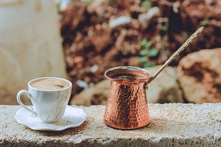
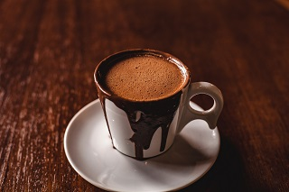

| HOME | MENU | ABOUT | CONTACT |
|---|
FEATURED PRODUCTS
- Espresso

Our smooth signature Espresso Roast with rich flavor and caramelly sweetness is at the very heart of everything we do.
more details
- Cappucchino

Dark, rich espresso lies in wait under a smoothed and stretched layer of thick milk foam. An alchemy of barista artistry and craft.
more details
- Americano
Espresso shots topped with hot water create a light layer of crema culminating in this wonderfully rich cup with depth and nuance. Pro Tip: For an additional boost, ask your barista to try this with an extra shot.
more details
- Turkish Brew

The general term of Turkish coffee clearly states a preparing method of a unique type of coffee. Turkish coffee is the only type of coffee that cooking takes place during its preparation.
more details
- Cold Brew

Handcrafted in small batches daily, slow-steeped in cool water for 20 hours, without touching heat and finished with a splash of milk—The Coffee House® Cold Brew is made from our custom blend of beans grown to steep long and cold for a super-smooth flavor.
more details
- Hot Chocolate

Steamed milk and mocha sauce topped with sweetened whipped cream and a chocolate-flavored drizzle. A timeless classic made to sweeten your spirits..
more detailszealtrax101|copyright©2021